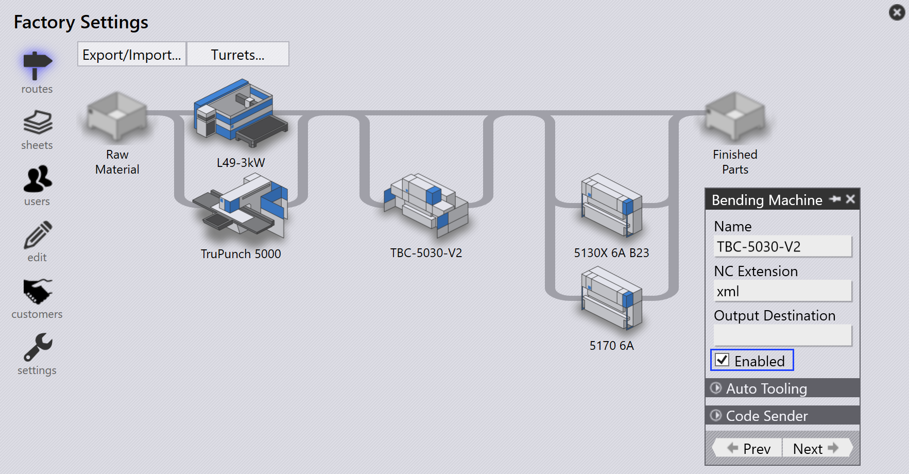
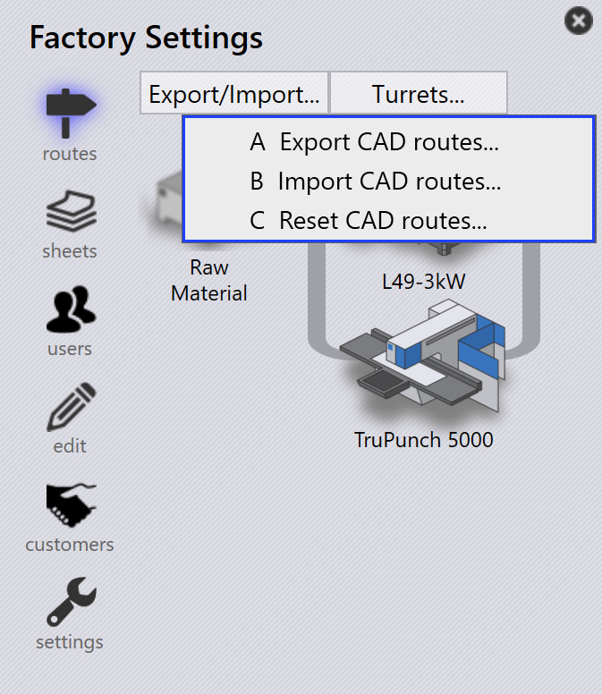
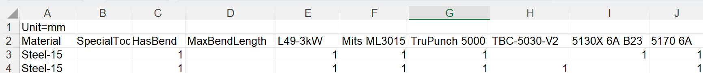
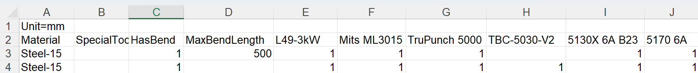
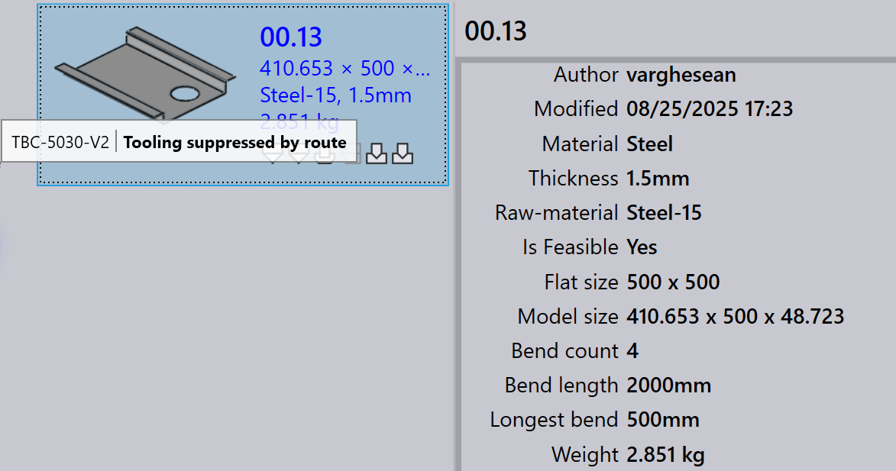
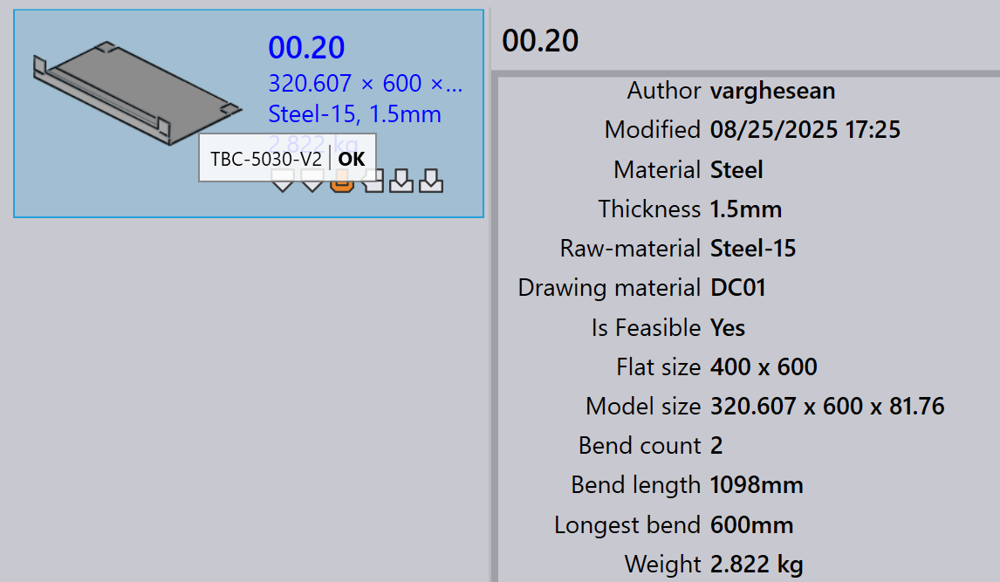

Rotas
Com base em sua licença, o TruSmartCAM terá um conjunto padrão de máquinas CAM e configurações de roteamento. Você pode personalizar essas configurações para se adequar aos seus fluxos de trabalho de fabricação específicos.

Na página de rotas, as máquinas são representadas como estações de processamento, cada uma identificada por uma imagem e um nome.
As rotas conectam as estações, mostrando os possíveis caminhos de fluxo de trabalho que uma peça pode seguir do início ao fim. Você pode visualizar as propriedades da estação passando o mouse sobre uma estação.
Clicar em uma estação abre um painel com informações detalhadas sobre essa estação, incluindo seu nome, tipo e status de disponibilidade.
-
Para editar a disponibilidade da estação, clique na estação e alterne a caixa de seleção _Habilitado no painel.
Exportar/Importar configurações de roteamento
O recurso Export/Import permite que os usuários salvem suas configurações de roteamento atuais e as apliquem a outros projetos ou instâncias.

Exportar rotas CAD
Clique em Export CAD routes… para salvar todas as regras de condição de rota atuais em um arquivo CSV.

O CSV lista materiais e suas condições de roteamento. As colunas representam nomes de máquinas e condições (ex: Material, SpecialTool, HasBend, MaxBendLength). Um valor de 1 indica roteamento para uma máquina; uma célula em branco significa sem roteamento.
Você pode modificar este CSV e reimportá-lo no sistema.
Importar rotas CAD
Use Import CAD routes… para aplicar um arquivo CSV modificado.
| Antes de importar, execute Reset CAD routes para limpar as configurações existentes. |
O sistema lê o arquivo e atualiza as condições de rota. As regras podem incluir condições como HasBend e MaxBendLength.

Se HasBend = 1, a regra se aplica a peças com dobras.
Se MaxBendLength =1, a regra limita ainda mais com base no comprimento da maior dobra da peça.
A peça 00.13 tem uma dobra mais longa de 500 mm. Ela corresponde à primeira regra, então TBC-5030-V2 é excluída.

A peça 00.20 tem uma dobra mais longa de 600 mm. Ela não corresponde à primeira regra e segue a segunda regra, roteando para todas as máquinas.

Redefinir rotas CAD
Use Reset CAD routes para limpar todas as configurações existentes antes de importar um novo CSV.
| Se você importar sem redefinir, regras antigas podem conflitar com as novas. |